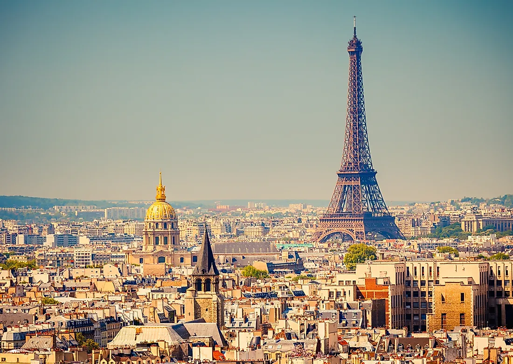
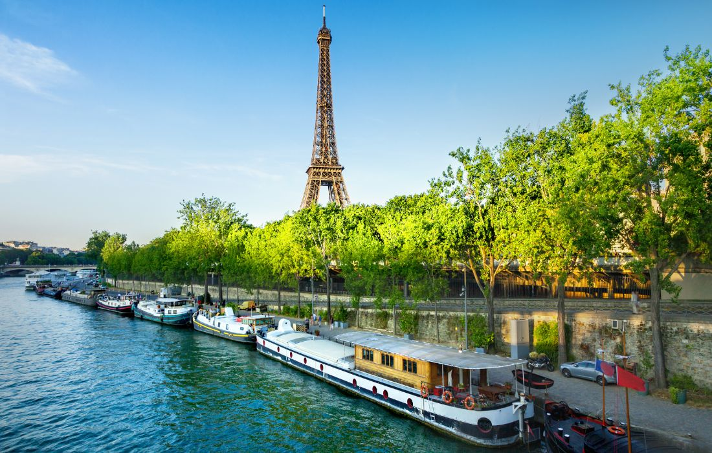

Paris, capital of France, is one of the most important and influential cities in the world. In terms of tourism, Paris is the second most visited city in Europe after London. In this travel guide, you’ll find out about the city’s top attractions, as well as useful travel advice on how to get to Paris and how to save money whilst traveling.
The capital of France seems to have been designed specifically for the enjoyment of its visitors. Its streets, squares, buildings, gardens, and monuments beckon tourists to return, and indeed, many do.

Some of the most memorable things to do in Paris include visiting the Eiffel Tower, the Arc de Triomphe, and Notre Dame Cathedral. During the evening, experiencing one of the legendary Moulin Rouge cabaret shows, strolling through some of the most picturesque neighborhoods, like Montmartre, or climbing the Montparnasse Tower is a must.